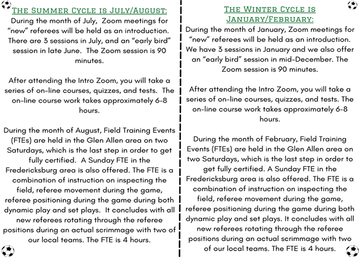
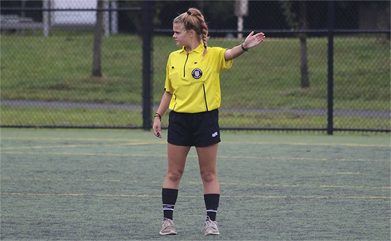

Virginia's premier provider of soccer and futsal officials
Become an official belowCVSRA is focused on empowering youth to begin refereeing and continue to grow their skills. Youth refereeing instills qualities such as integrity, communication, and quick thinking which can be applied to aspects off the field. Encouraging a new generation to grow their passion for the sport of soccer through refereeing is our goal!
CVSRA, the provider of soccer officials for the central Richmond area, provides and hosts two opportunities to become a certified soccer referee throughout the year, during a Summer and Winter cycle. The training program is the best in the Mid-Atlantic area, and the model has a very high success rate on getting prospective referee candidates through the process and onto the fields as certified officials. Click below to view the two options and register!
USSF certified referees must recertify yearly. The recertification class is entirely online. Follow the link below to the VA state website and click on the link for “Returning Officials” to register and take the recertification course:
Although there may seem to be little variation among different ages and levels of soccer, that's not the case. Youth, adult, and scholastic rules and regulations vary greatly. Click on the buttons below to learn more about or refresh your memory on the differences among the different soccer leagues you will referee. We encourage all referees to print a copy of the documents below to keep on your bag to serve as a quick reminder before games begin.
Youth Soccer Adult League Soccer Scholastic SoccerEvery month, CVSRA selects a referee who exemplifies the qualities all youth referees should strive to develop. This month's Youth Refree Spotlight highlights Morgan Johnson!
Morgan began refereeing in ninth grade.
View the links below to check out important documents.